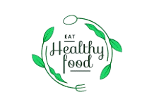

🍴Selamat Datang di Goodlife Kitchen🍴
Hidup lebih sehat, rasa tetap nikmat
Beranda | Menu | kontak
Tentang Restoran Kami
Goodlife Kitchen hadir untuk Anda yang ingin menikmati hidangan lezat namun tetap bergizi dan menyehatkan. Kami menggunakan bahan alami tanpa pengawet dan selalu segar setiap hari.
"Makan Sehat, Hidup Lebih Nikmat"
Makan di Tempat
Kami menyediakan tempat makan yang nyaman, bersih, dan cocok untuk keluarga maupun teman. Dengan suasana yang hangat dan pelayanan yang ramah, pelanggan dapat menikmati hidangan dengan lebih santai dan menyenangkan.
Delivery
Restoran kami melayani pemesanan makanan secara online dan pengantaran ke rumah pelanggan. Makanan dikemas dengan rapi untuk menjaga kualitas dan cita rasa sehingga tetap nikmat saat sampai di tujuan.
Catering dan Acara Khusus
Kami menerima pesanan catering untuk berbagai acara seperti ulang tahun, rapat, seminar, dan acara keluarga. Menu dapat disesuaikan dengan kebutuhan pelanggan dengan tetap mengutamakan kualitas bahan dan rasa terbaik.
Terimakasih telah memilih makanan sehat
© 2025 Goodlife Kitchen All rights reserved